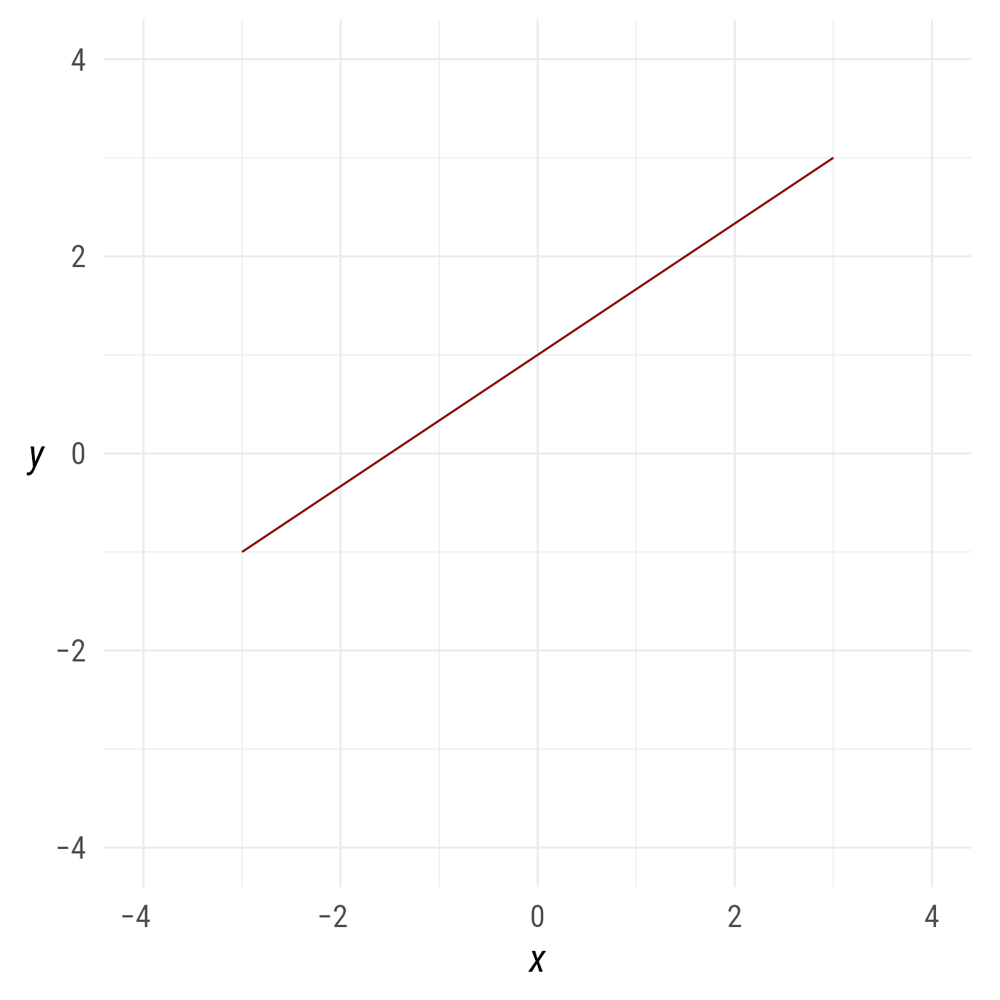
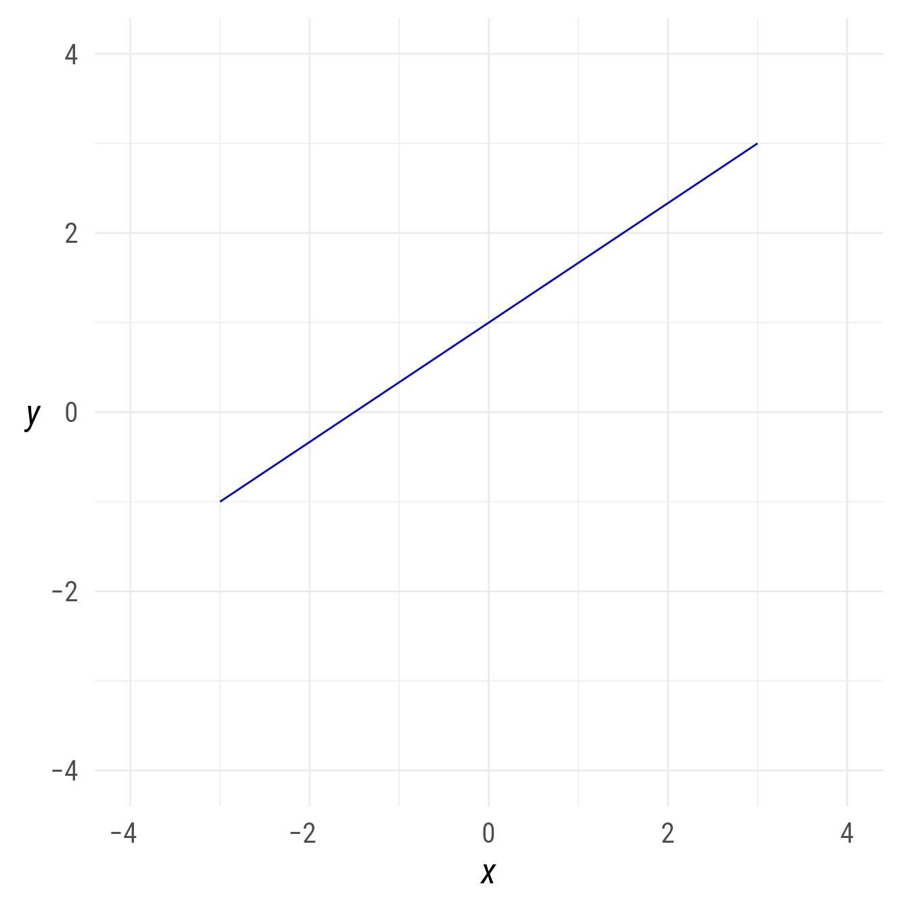
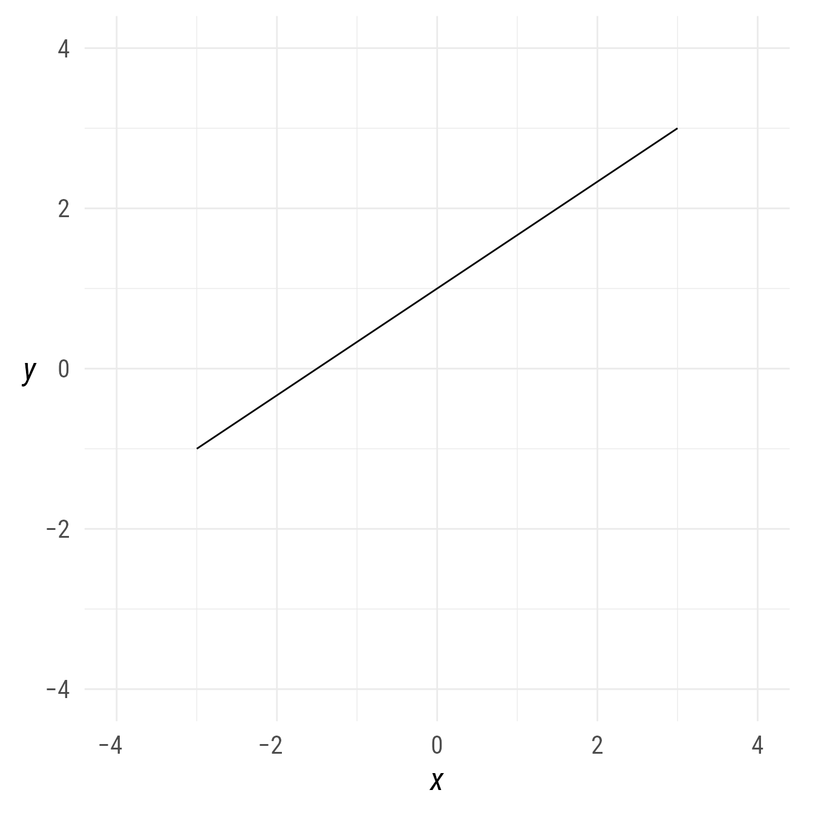
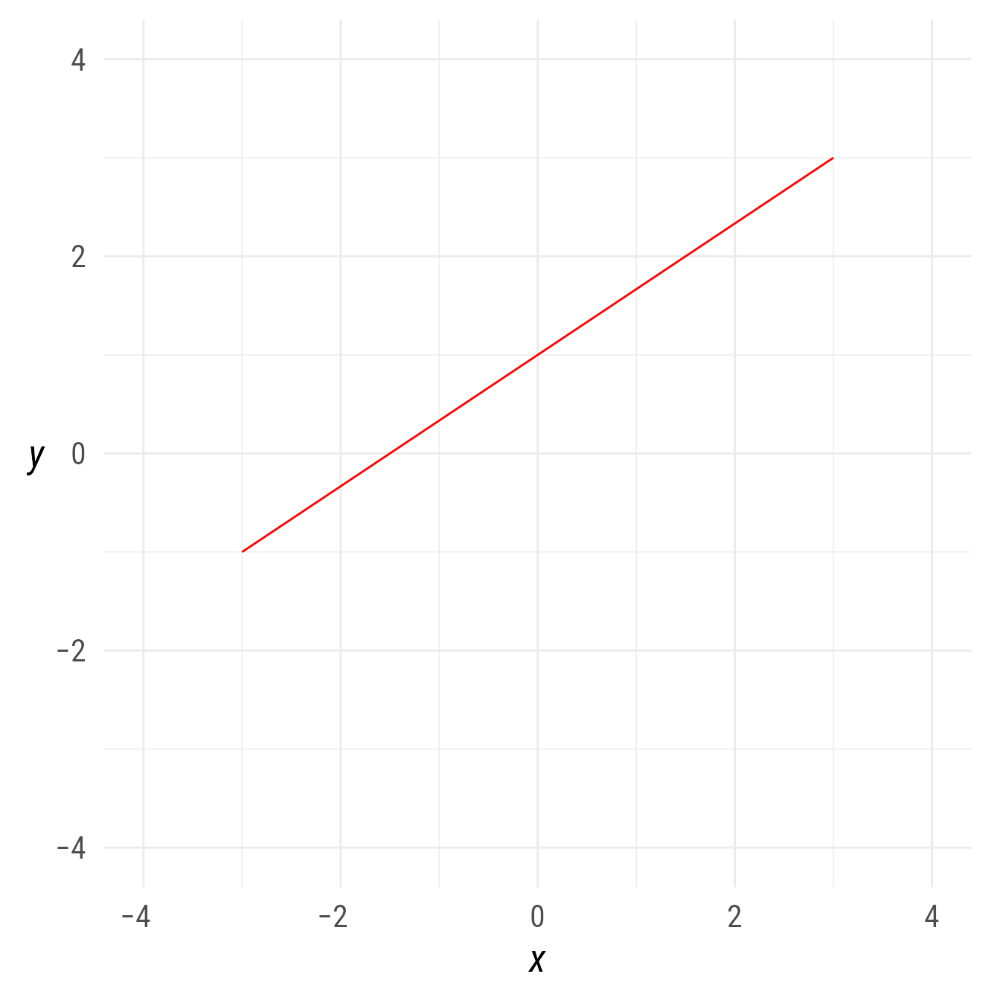
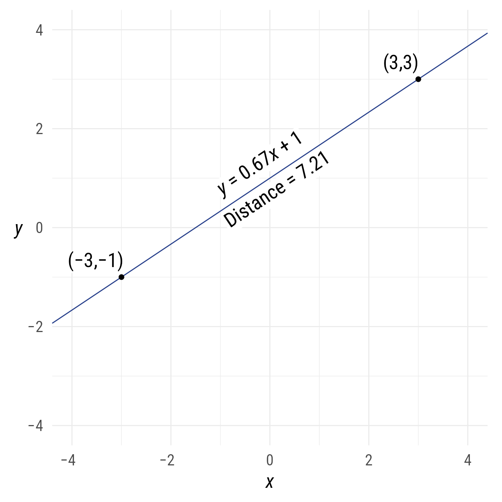
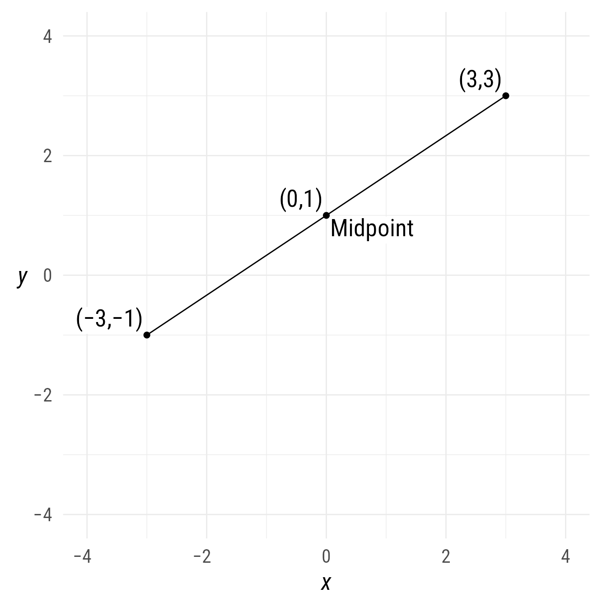
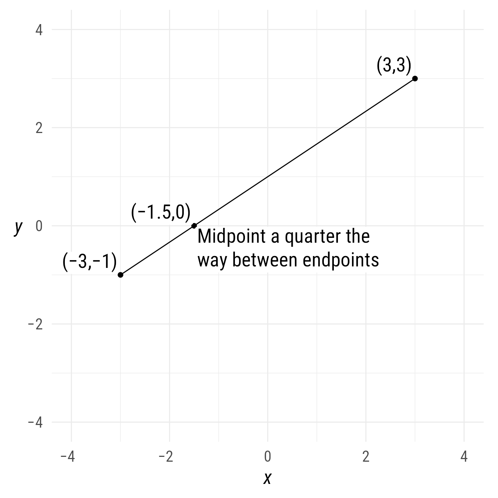
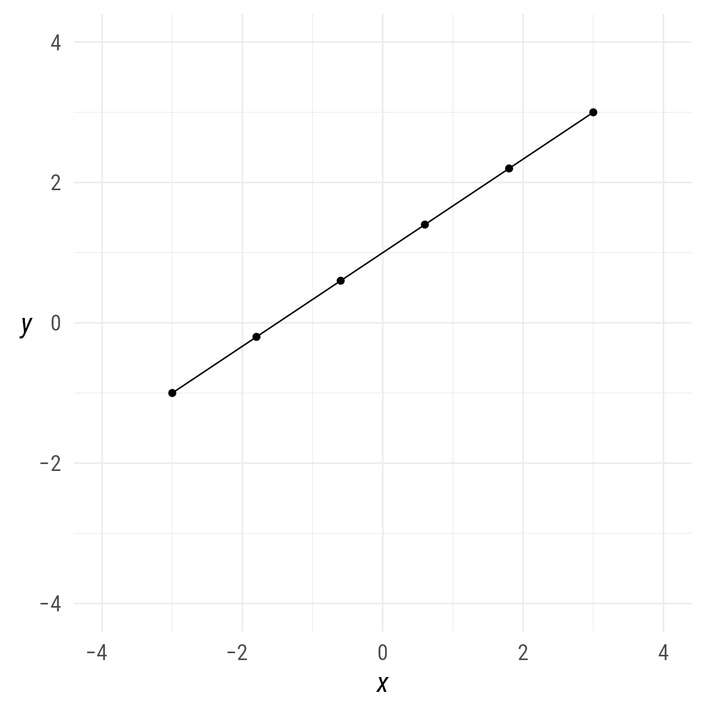
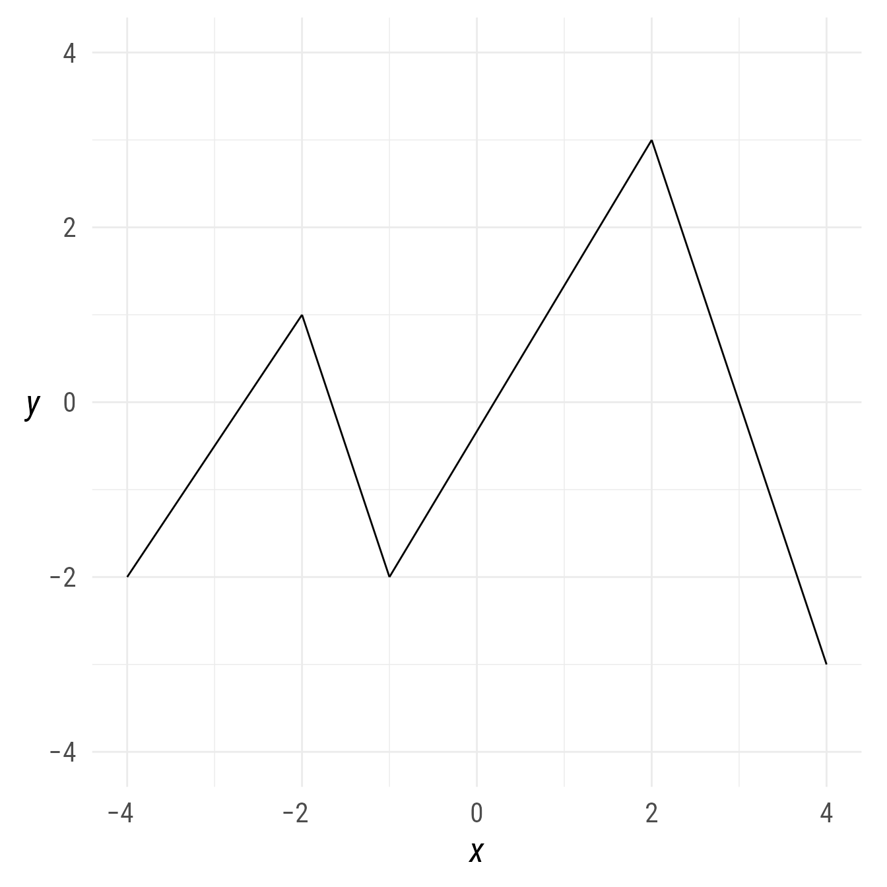

library(ggdiagram)
library(ggplot2)
library(dplyr)
#>
#> Attaching package: 'dplyr'
#> The following objects are masked from 'package:stats':
#>
#> filter, lag
#> The following objects are masked from 'package:base':
#>
#> intersect, setdiff, setequal, union
library(ggtext)
library(ggarrow)
library(arrowheadr)Setup
Packages
Base Plot
To avoid repetitive code, we make a base plot:
my_font <- "Roboto Condensed"
my_font_size <- 20
my_point_size <- 2
my_arrowhead <- arrowheadr::arrow_head_deltoid(2.1)
# my_colors <- viridis::viridis(2, begin = .25, end = .5)
my_colors <- c("#3B528B", "#21908C")
theme_set(
theme_minimal(
base_size = my_font_size,
base_family = my_font) +
theme(axis.title.y = element_text(angle = 0, vjust = 0.5)))
bp <- ggdiagram(
font_family = my_font,
font_size = my_font_size,
point_size = my_point_size,
linewidth = .5,
theme_function = theme_minimal,
axis.title.x = element_text(face = "italic"),
axis.title.y = element_text(
face = "italic",
angle = 0,
hjust = .5,
vjust = .5)) +
scale_x_continuous(labels = WJSmisc::signs_centered,
limits = c(-4, 4)) +
scale_y_continuous(labels = signs::signs,
limits = c(-4, 4))Specifying a segment
A segment is a portion of a line between two points.
p1 <- ob_point(-3,-1)
p2 <- ob_point(3,3)
s1 <- ob_segment(p1, p2)
bp + s1 + p1 + p2
Styling a segment
The primary options for styling a segment are alpha, color, linetype, and linewidth. However, it can take any style from ggarrow::geom_arrow_segment
If you are not sure which properties can be set, you an see them in the @aesthetics@style slot.
s1@aesthetics@style
#> [1] "alpha" "arrow_head" "arrow_fins" "arrowhead_length"
#> [5] "color" "length_head" "length_fins" "lineend"
#> [9] "linejoin" "linewidth" "linewidth_fins" "linewidth_head"
#> [13] "linetype" "resect" "resect_fins" "resect_head"
#> [17] "stroke_color" "stroke_width"Styles can be specified when the segment is created.
s2 <- ob_segment(p1,p2, color = "green4")
bp + s2Styles can be modified after the segment is created:
s2@linewidth <- 3
bp + s2The as.geom function passes style arguments to the ggarrow::geom_arrow_segment function without modifying the segment’s style property:
bp +
as.geom(s1, color = "red4")

as.geom function
As an alternative, the geom property is a function that calls as.geom.
bp + s1@geom(color = "blue3")

geom property
To verify that s1 has not changed its color:
bp + s1

A “pipe-friendly” way to modify any ggdiagram object is to use S7’s set_props function, which has been re-exported to ggdiagram for the sake of convenience. Like as.geom, this function does not modify s1, but unlike as.geom, set_props can be used to save a new object with the specified modifications by assigning it to a new variable. That is, as.geom creates a ggplot2 geom, whereas set_props will create a modified a ggdiagram object (or any other S7 class).
bp +
s1 |>
set_props(color = "red") 
Features of a segment
Distance between points
s1@distance
#> [1] 7.211103Alternately:
distance(s1)
#> [1] 7.211103Line passing through the segment
The line that passes through the segment contains information about the segment, such as its slope, intercept, or angle.
To access the line that passes between both points:
s1@line
#> <ob_line>
#> @ slope : num 0.667
#> @ intercept : num 1
#> @ xintercept: num -1.5
s1@line@slope
#> [1] 0.6666667
s1@line@intercept
#> [1] 1
s1@line@angle
#> 34°Code
bp +
s1@line |> set_props(color = "royalblue4") +
s1@midpoint(position = c(0,1))@label(
polar_just = ob_polar(s1@line@angle + degree(90), 1.5),
plot_point = TRUE) +
ob_label(c(equation(s1@line),
paste0("Distance = ", round(s1@distance, 2))),
p = midpoint(s1),
vjust = c(-.2, 1.1),
angle = s1@line@angle)

Midpoints
By default, the midpoint function’s position argument is .5, which finds the point halfway between the point of a segment:
s1@midpoint()
#> <ob_point>
#> @ x: num 0
#> @ y: num 1
#> Other props: alpha, color, fill, shape, size, stroke, auto_label,
#> bounding_box, length, r, theta, style, tibble, xy,
#> geom, label, aestheticsCode
bp +
s1 +
s1@midpoint()@label("Midpoint", hjust = 0, vjust = 1) +
s1@midpoint(c(0, .5, 1))@label(plot_point = TRUE,
hjust = 1,
vjust = 0)

To find the midpoint 25% of the distance between the endpoints of segment:
s1@midpoint(position = .25)
#> <ob_point>
#> @ x: num -1.5
#> @ y: num 0
#> Other props: alpha, color, fill, shape, size, stroke, auto_label,
#> bounding_box, length, r, theta, style, tibble, xy,
#> geom, label, aestheticsCode

Multiple midpoints can be specified:
bp +
s1 +
s1@midpoint(seq(0,1,.2))

A quick way to get the endpoints of a segment is to specify “midpoints” at positions 0 and 1:
bp +
s1 +
s1@midpoint(c(0,1))midpoint property.
Segment chains
If a point object with multiple points is placed in the p1 slot but the p2 slot is left empty, a series of segments chained together will be created.
bp +
ob_segment(ob_point(c(-4, -2, -1, 2, 4),
c(-2, 1, -2, 3, -3)))
